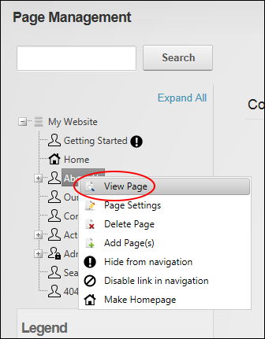

How to view any page on your site including pages which aren't displayed in the site menu using the Pages module. Users must be granted Edit Page (DNN Platform) / Add Content (Evoq Content) permissions to the page where the Pages module is located as well as View Page (DNN Platform) / View permissions (Evoq Content) to the page to be viewed.
